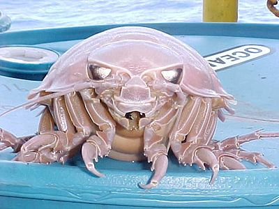
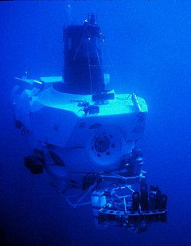

From Wikipedia, the free encyclopedia
The term deep sea creature refers to animals that live below the photic zone of the ocean. These creatures must survive in extremely harsh conditions, such as hundreds of bars of pressure, small amounts of oxygen, very little food, no sunlight, and constant, extreme cold.
Most creatures have to depend on food floating down from above.
These creatures live in very demanding environments, such as the abyssal or hadal zones, which, being thousands of meters below the surface, are almost completely devoid of light. The water is between 3 and 10 degrees Celsius and has low oxygen levels. Due to the depth, the pressure is between 20 and 1,000 bar. Creatures that live hundreds or even thousands of meters deep in the ocean have adapted to the high pressure, lack of light, and other factors.The lack of light requires creatures to have special adaptations to find food, avoid predators, and find mates by creating there own light or having an ability to see in the dark.
At this depth, there is not enough light for photosynthesis to occur and not enough oxygen to support animals with a high metabolism. To survive, creatures have slower metabolisms which require less oxygen; they can live for long periods without food. Most food either comes from organic material that falls from above or from eating other creatures that have derived their food through the process of chemosynthesis (the process of changing chemical energy into food energy). Because of the sparse distributions of creatures, there is always at least some oxygen and food. Also, instead of using energy to search for food, these creatures use particular adaptations to ambush prey. In turn, these creatures rely on large food particles, such as fragments of dead fish or other marine mammals, to fall from the surface.[1] Although the falling food can support the population of the deep sea creatures, there can still be a lack of resources due to a middle population of fish consuming the fragments before making it to the bottom.[1] Deep-sea vertebrates also have less muscle and less ossified bone. This lack of ossification was adapted to save energy when food is scarce.[2]
Bioluminescence is the ability of an organism to create light through chemical reactions. Creatures use bioluminescence in many ways: to light their way, attract prey, or seduce a mate. Many underwater animals are bioluminescent—from the viper fish to the various species of flashlight fish, named for their light.[3] Some creatures, such as the angler fish, have a concentration of photophores in a small limb that protrudes from their bodies, which they use as a lure to catch curious fish. Bioluminescence can also confuse enemies. The chemical process of bioluminescence requires at least two chemicals: the light producing chemical called luciferin and the reaction causing chemical called luciferase.[4] The luciferase catalyzes the oxidation of the luciferin causing light and resulting in an inactive oxyluciferin. Fresh luciferin must be brought in through the diet or through internal synthesis.[4]
Since, at such deep levels, there is little to no sunlight, photosynthesis is not a possible means of energy production, leaving some creatures with the quandary of how to produce food for themselves. For the giant tube worm, this answer comes in the form of bacteria. These bacteria are capable of chemosynthesis and live inside the giant tube worm, which lives on hydrothermal vents. These vents spew forth very large amounts of chemicals, which these bacteria can transform into energy. These bacteria can also grow free of a host and create mats of bacteria on the sea floor around hydrothermal vents, where they serve as food for other creatures. Bacteria are a key energy source in the food chain. This source of energy creates large populations in areas around hydrothermal vents, which provides scientists with an easy stop for research. Organisms can also use chemosynthesis to attract prey or to attract a mate.[5]
The term deep-sea gigantism describes an effect that living at such depths has on some creatures' sizes, compared to the size of relatives that live in different environments. These creatures are generally many times bigger than their counterparts. The giant isopod (related to the common pill bug) exemplifies this. To date, scientists have only been able to explain deep-sea gigantism in the case of the giant tube worm. Scientists believe these creatures are much larger than shallower-water tube worms because they live on hydrothermal vents that expel huge amounts of resources. They believe that, since the creatures don't have to expend energy regulating body temperature and have a smaller need for activity, they can allocate more resources to bodily processes. There are also cases of deep-sea creatures being abnormally small, such as the lantern shark, which fits in an adult human's mouth.[6]
Humans have explored less than 4% of the ocean floor, and dozens of new species of deep sea creatures are discovered with every dive. The submarine DSV Alvin—owned by the US Navy and operated by the Woods Hole Oceanographic Institution (WHOI) in Woods Hole, Massachusetts—exemplifies the type of craft used to explore deep water. This 16 ton submarine can withstand extreme pressure and is easily manoeuvrable despite its weight and size. The extreme difference in pressure between the sea floor and the surface makes the creature's survival on the surface near impossible; this makes in-depth research difficult because most useful information can only be found while the creatures are alive. Recent developments have allowed scientists to look at these creatures more closely, and for a longer time. Marine biologist Jeffery Drazen has explored a solution: a pressurized fish trap. This captures a deep-water creature, and adjusts its internal pressure slowly to surface level as the creature is brought to the surface, in the hope that the creature can adjust.[7] Another scientific team, from the Université Pierre-et-Marie-Curie, has developed a capture device known as the PERISCOP, which maintains water pressure as it surfaces, thus keeping the samples in a
